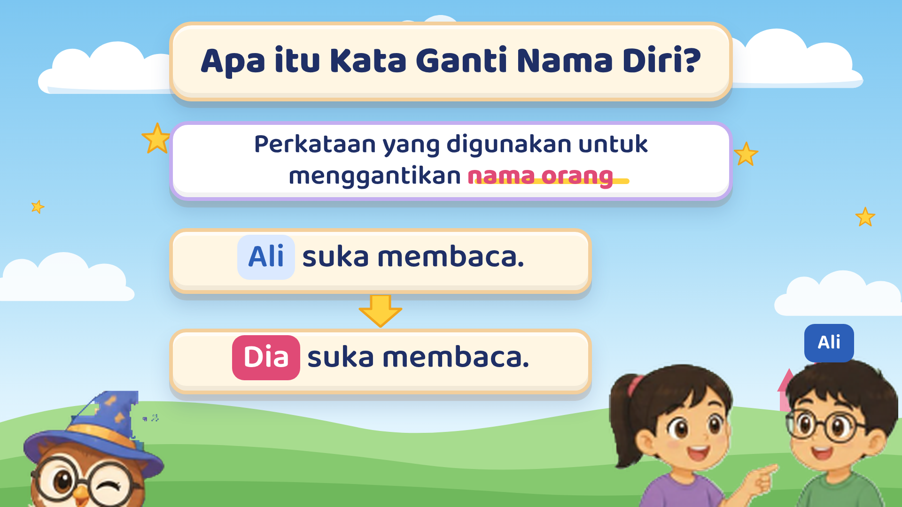
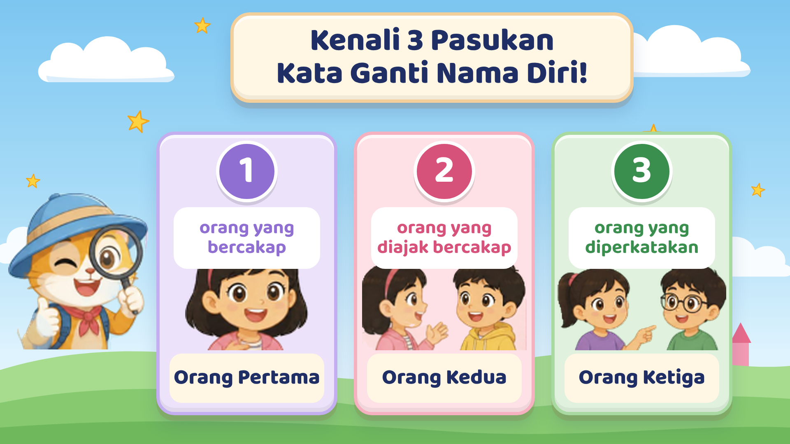
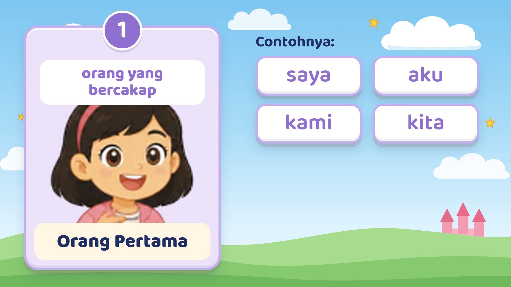
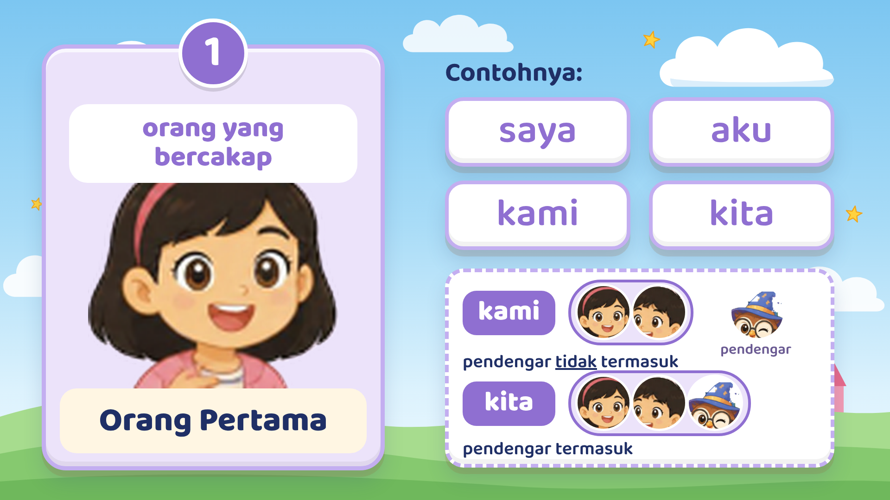
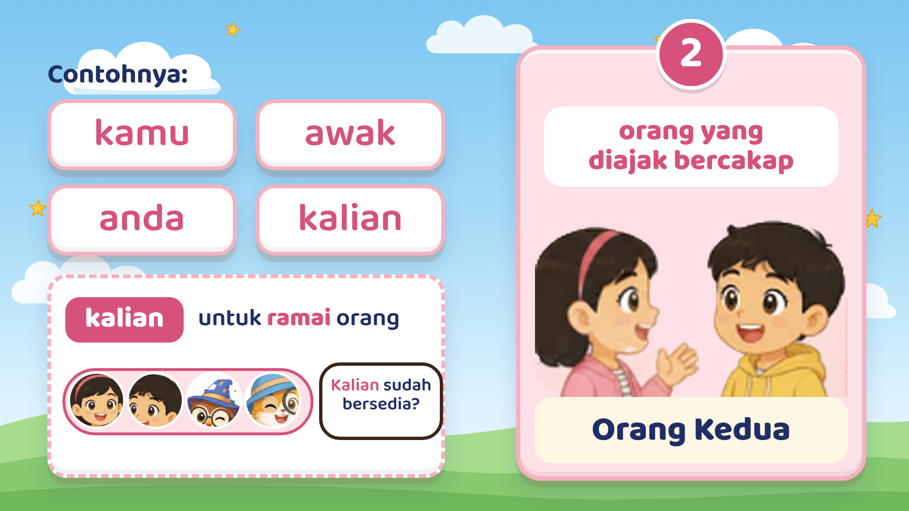
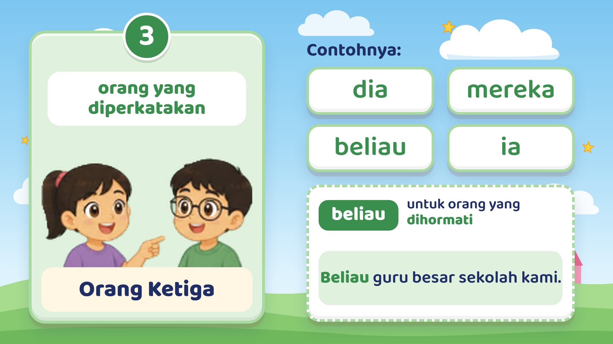
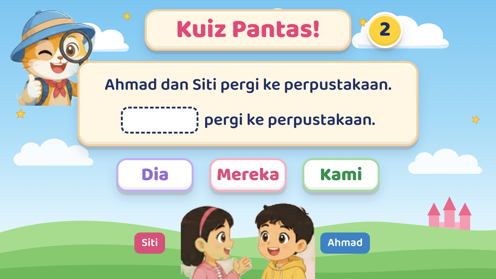
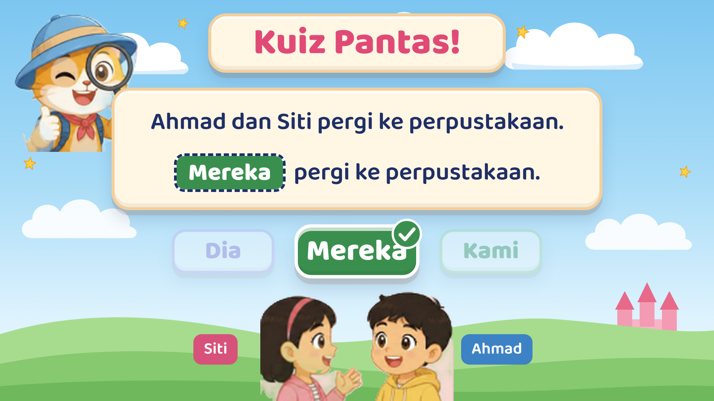
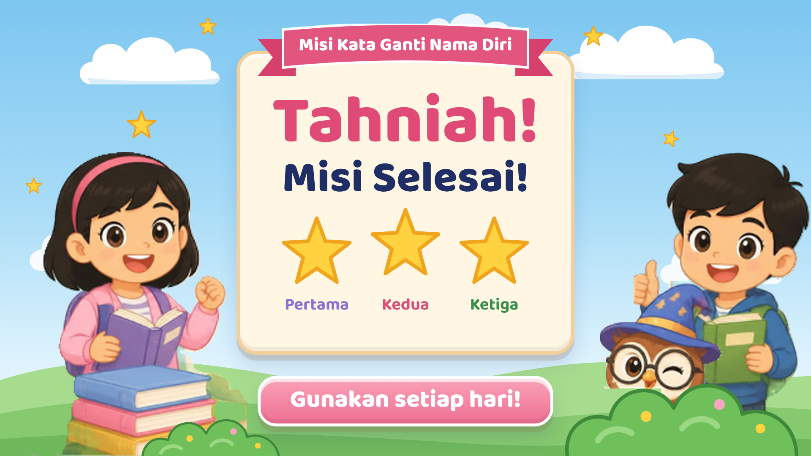

Misi Kata Ganti Nama Diri: storyboard draf
60 saat · 1920×1080 · suara latar lelaki Bahasa Melayu (masa ialah anggaran)

Suara: Hai, murid-murid! Selamat datang ke Misi Kata Ganti Nama Diri. Jom kumpul bintang sambil belajar!
Skrin: panel tajuk muncul, reben terbuka, tiga lencana (buku, mentol, pensel) melantun, tajuk jatuh perkataan demi perkataan; budak perempuan, budak lelaki dan burung hantu ahli sihir naik dari bawah.

Suara: Kata ganti nama diri ialah perkataan yang menggantikan nama orang. Contohnya, Ali suka membaca. Kita boleh sebut, dia suka membaca.
Skrin: definisi dengan "nama orang" digaris; ayat "Ali suka membaca." kemudian anak panah ke "Dia suka membaca." Budak perempuan menunjuk ke arah Ali.

Suara: Kata ganti nama diri terbahagi kepada tiga pasukan. Mari kita kenali satu per satu!
Skrin: tiga kad seperti halaman kedua laman web, kucing penjelajah di kiri.

Suara: Pasukan pertama ialah orang pertama, iaitu orang yang bercakap. Contohnya saya, aku, kami dan kita.
Skrin: kad ungu besar; perkataan muncul satu-satu semasa disebut.

Suara: Ingat, kami tidak termasuk pendengar, tetapi kita termasuk pendengar.
Skrin: "kami" mengelilingi dua murid dan burung hantu (pendengar) berada di luar; "kita" mengelilingi ketiga-tiganya.

Suara: Pasukan kedua ialah orang kedua, iaitu orang yang diajak bercakap. Contohnya kamu, awak, anda dan kalian. Kalian digunakan untuk ramai orang.
Skrin: kad merah jambu; contoh "Kalian sudah bersedia?" kepada sekumpulan kawan.

Suara: Pasukan ketiga ialah orang ketiga, iaitu orang yang diperkatakan. Contohnya dia, mereka, beliau dan ia. Beliau digunakan untuk orang yang dihormati.
Skrin: kad hijau; contoh "Beliau guru besar sekolah kami."

Suara: Cuba teka! Ahmad dan Siti pergi ke perpustakaan. Apakah kata ganti nama diri yang sesuai?
Skrin: tiga pilihan (Dia, Mereka, Kami) dan kiraan 3, 2, 1.

Suara: Jawapannya ialah mereka!
Skrin: "Mereka" bertukar hijau dengan tanda betul dan masuk ke ruang kosong.

Suara: Hebat! Misi selesai. Gunakan kata ganti nama diri dengan betul setiap hari!
Skrin: letupan bintang, tiga bintang emas (Pertama, Kedua, Ketiga), butang "Gunakan setiap hari!".